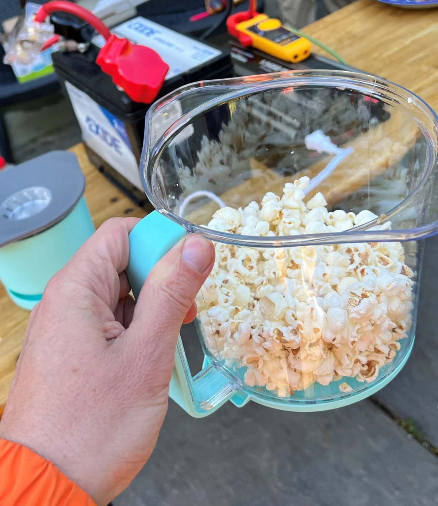

Résumé : JavaScript
JavaScript est un langage de programmation essentiel pour le développement web moderne. Il
permet de rendre les pages interactives, dynamiques et réactives côté client.
- 📄 Définition : Langage de script interprété, principalement utilisé dans
les navigateurs.
- 🧩 Fonctions principales : Manipulation du DOM, gestion des événements,
requêtes AJAX, animations, etc.
- ⚙️ Syntaxe : Variables (
let, const), fonctions,
objets, tableaux, boucles, conditions...
- 🌐 Utilisation : Frontend (navigateur), Backend (Node.js), applications
mobiles et desktop.
- 🔒 Bonnes pratiques : Sécurité, modularité, commentaires, nommage clair,
gestion des erreurs.
Exemple simple
// Afficher un message dans la console
console.log("Bienvenue en JavaScript !");
Actualités

L'info en 3 points
- CompressionX, une start-up britannique, promet de réduire la taille des
fichiers jusqu'à 65% sans perte de qualité.
- Le logiciel utilise un algorithme adaptatif pour surpasser les méthodes traditionnelles
comme
Lempel-Ziv, visant une compression plus efficace.
- Malgré des promesses alléchantes, le modèle payant de CompressionX pourrait freiner son
adoption
face à des outils gratuits.
Dans un secteur longtemps dominé par des noms comme WinRAR et 7-Zip, l'arrivée d'un nouvel
acteur est toujours un événement.
La jeune pousse CompressionX se positionne en alternative aux outils établis, avec une
technologie qui serait plus performante.
Cette annonce intervient alors que les systèmes d'exploitation,
à l'image de la récente mise à jour de qualité de Windows 11 intégrant nativement la gestion de
multiples formats d'archives,
rendent le marché plus compétitif que jamais.
🚀 Tomorrowland rend hommage à Avicii: “Son histoire est indissociable
de
celle du festival”
Tomorrowland va rendre hommage cette année à Tim Bergling, plus connu sous le pseudo
d’Avicii, décédé en 2018, ont annoncé les organisateurs. Un espace commémoratif dédié avec
une narration visuelle et sonore
de la vie et de l’héritage d’Avicii sera installé sur
le
terrain du festival où le DJ s’était produit pour la dernière fois il y a dix ans..

💡 Astuce du jour
Voici des exemples de ce qu’on peut faire avec 800 watts (W)
d’électricité : allumer quelques ampoules, faire fonctionner un petit frigo, ou encore
utiliser une petite plaque de cuisson à faible puissance. En soi, une telle puissance ne
représente pas grand-chose, jusqu’à ce qu’on sait que cette énergie a été transmise sans fil
à plusieurs kilomètres de distance, uniquement par un rayon laser traversant l’atmosphère.
C’est ce qu’a réalisé l’agence du ministère de la Défense des États-Unis, la DARPA, durant
une série de tests réalisés au Nouveau-Mexique. L’expérience a été effectuée dans le cadre
du programme POWER (Persistent Optical Wireless Energy Relay), un projet lancé par l’agence
pour développer une nouvelle manière de transmettre de l’énergie à distance.
Agenda
Vos prochains événements :
- 📅 Révision Langage C et théorie des Réseaux – 10 juillet, 14h
- 🥙 Aller au Réstaurant avec papa et maman 🍻– 12 juillet, 11h
- 🫱🏻🫲🏾 Rencontre avec les membres du groupe JS – 15 juillet, 18h
- 💻 Términer le projet MSI – 19 juillet, 18h
- 🔐 Apprendre l'outil metasploit de kali linux – 24 juillet, 8h
Paramètres